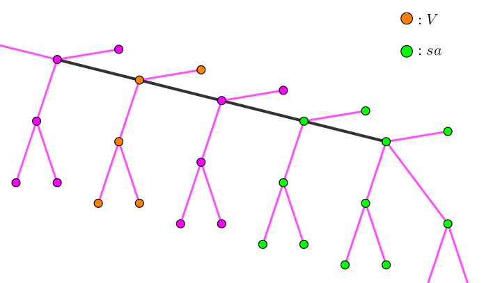

给定一棵有根树，$1$ 为根节点，以及一个序列 $a_1, a_2, \cdots, a_n$。现在有一个 access 操作序列，其中顶点 $i$ 进行了 $a_i$ 次 access。你的任务是求出轻重链切换次数的最大值。
有 $m$ 次操作，每次操作形如对 $a_x$ 加上 $w$ ($w > 0$)，你需要在每次操作之后，求出最大的切换次数。
第一行包含两个正整数 $n, m$ ($n, m \leq 4 \times 10^5$)，表示树的节点数和操作个数。
第二行包含 $n$ 个正整数 $a_1, a_2, \cdots, a_n$ ($1 \leq a_i \leq 10^7$)，表示 $a_i$ 的初始值。
接下来 $n - 1$ 行，每行两个正整数 $u_i, v_i$ ($1 \leq u_i, v_i \leq n; u_i \neq v_i$) 描述树上的一条边。
接下来 $m$ 行，每行两个整数 $x_i, w_i$ ($1 \leq x_i \leq n; 1 \leq w_i \leq 10^7$) 表示将 $a_{x_i}$ 加上 $w_i$。
输出共 $m + 1$ 行，第一行表示初始的 $a_i$ 的答案，接下来 $m$ 行每行表示这次修改后的答案。
考虑一个点 $i$ 对答案的贡献 ($i$ 的 preferred child 的切换次数)，可以发现它只和以 $i$ 为根的子树内部的点的 access 有关。
由于一棵树中不同子树之间的关系是嵌套关系 (nested relation)，因此它们之间的最大值是相互独立的，于是我们只需要计算每个点 $i$ 对答案贡献的最大值，然后依次相加即可。
对于点 $i$，设它的子节点为 $c_1, c_2, \cdots, c_k$，对应的子树为 $C_1, C_2, \cdots, C_k$。则对 $i$ 来说，同一棵子树中的点是等价的。
(ps: 比如，两个顶点 $u, v \in C_j$，则如果它们连续 access (设先 $u$ 后 $v$)，则 $v$ 会在 $\mathop{\mathrm{LCA}} \left( u, v \right) \in C_j$ 处切换轻重链，而此时链 $\mathop{\mathrm{LCA}} \left( u, v \right) \leadsto i$ 属于同一条重链，因此 $i$ 的 prefer child 不受影响；而对于不同集合中的点，它们之间连续 access，显然 $i$ 的 prefer child 会受影响)
于是，我们把以 $i$ 为根的子树中的所有点分为了 $k + 1$ 个集合：$C_0 = \left\{ i \right\}, C_1, C_2, \cdots, C_k$。每个集合都有它的 access 次数，分别记为 $A_0 = a_i, A_1, A_2, \cdots, A_k$ (其中 $A_j$ 为 $C_j$ 中所有点的 $a$ 之和)。
那么，对于一个 access 序列，点 $i$ 的贡献就等于序列中相邻两个 access 的点属于不同集合的数量。
设 $N = A_0 + A_1 + A_2 + \cdots + A_k$，若 $\exists j \in \left[ 0, k \right]$ 使得 $2 A_j > N + 1$，则在 access 序列中不可避免地存在两个相邻元素均属于 $C_j$，且这样的重复对数至少为 $2 A_j - N - 1$ 次。
而此时，其余的相邻元素均可以做到属于不同集合，因此此时点 $i$ 贡献的最大值为 $\left( N - 1 \right) - \left( 2 A_j - N - 1 \right) = 2 \left( N - A_j \right)$。
若对于所有 $j$，均有 $2 A_j \leq N + 1$，则容易证明，一定存在至少一种方案，使得相邻元素均属于不同集合。
于是，此时点 $i$ 贡献的最大值就等于 $N - 1$。
综上，点 $i$ 的贡献为：$$ f_i = \begin{cases} 2 \left( N - \max\limits_{0 \leq j \leq k} A_j \right) & 2 \max\limits_{0 \leq j \leq k} A_j > N + 1 \\ N - 1 & 2 \max\limits_{0 \leq j \leq k} A_j \leq N + 1 \end{cases} = \min \left\{ N - 1, 2 \left( N - \max_{0 \leq j \leq k} A_j \right) \right\} $$
从而，可以通过一遍 dfs 来求得初始状态下的答案 $\displaystyle ans = \sum_{i=1}^n f_i$。
对于有 "加权" 操作的情况，又该怎么处理呢？
首先，容易注意到，对于一个点 $i$，还是记 $N = A_0 + A_1 + \cdots + A_k$，满足 $2 A_j > N + 1$ 的 $j$ 至多只有一个。
因此，我们可以沿用 "树链剖分" 的思想：如果 $i$ 的子节点 $c$，满足 "以 $c$ 为根的子树的点权之和" 的两倍大于 "以 $i$ 为根的子树的点权之和"，则令 $\left( i, j \right)$ 为重边 (preferred edge)。
和 "树链剖分" 不同的是，这里允许一个点没有 preferred child。
因此看起来这更像是一个 LCT (Link-Cut Tree)。不过，如果 $i \to c$ ($i = p_c$) 不是重边，则 $c$ 的子树和不超过 $i$ 的子树和的一半。因此，对于一个点，它到根的路径上的轻边数不超过 $O \left( \log \left( \sum a_i + m \cdot x_i \right) \right) = O \left( \log X \right)$ 的。
考虑每一次 "加权" 操作，可以发现一个极好的性质：如果对 $c \to i$ ($i = p_c$) 加权，则 $i$ 的 preferred child 要么不变，要么变为 $c$。
这个性质是至关重要的，因为如果是 "减权" 操作，就没有这个性质：有可能会冒出来新的 preferred child，从而难以维护。
因此，我们可以使用 LCT 来维护这个信息。
使用 LCT 的 access 操作提取出这 $O \left( \log X \right)$ 条重边，因为如果 $i$ 的 preferred child 已经是 $c$ 了，那么加权也无所谓了。
对于两个重边的交接处 (轻边)，则通过计算原来的点权和、新的点权和以及整个子树的点权和，暴力判断 preferred child 是否被改变。
其中会涉及到 LCT 维护子树信息的基本操作，可以参见 [lydsy4389]ZYB and Trees 或 [uoj207]共价大爷游长沙。
(ps: 下面代码中用 $V = as + v$ 表示该点点权加上所有虚儿子点权，$sa$ 表示辅助树中子树的 $V$ 和)
时间复杂度 $O \left( n \left( \log n + \log X \right) \right)$。
#include <bits/stdc++.h>
typedef long long ll;
const int N = 400054, M = N * 2;
int n, E = 0;
int to[M], first[N], next[M];
int p[N], prf[N];
ll a[N], sa[N], f[N];
ll ans = 0;
inline ll min(const ll x, const ll y) {return x < y ? x : y;}
inline ll max(const ll x, const ll y) {return x < y ? y : x;}
inline void addedge(int u, int v) {
to[++E] = v, next[E] = first[u], first[u] = E;
to[++E] = u, next[E] = first[v], first[v] = E;
}
// V : a[] + virtual sum (v + as)
// sa : sum of V (s + st, sum of v + sum of as)
namespace LCT {
#define pa p[nd]
struct node {ll v, sa; int p, c[2];} nd[N];
inline int dir(int x) {return !nd[x].p ? -1 : x == nd[x].pa.c[0] ? 0 : x == nd[x].pa.c[1] ? 1 : -1;}
inline void update(int x) {const int l = nd[x].c[0], r = nd[x].c[1]; nd[x].sa = nd[x].v + nd[l].sa + nd[r].sa;}
void rotate(int x) {
int y = nd[x].p, d = !dir(x);
nd[nd[y].c[!d] = nd[x].c[d]].p = y;
nd[x].p = nd[y].p;
if (~dir(y)) nd[y].pa.c[dir(y)] = x;
nd[nd[x].c[d] = y].p = x;
update(y);
}
void splay(int x) {for (; ~dir(x); rotate(x)) if (~dir(nd[x].p)) rotate(dir(x) ^ dir(nd[x].p) ? x : nd[x].p); update(x);}
void access(int x, int val) {
a[x] += val;
for (int r, y = 0; x; y = x, x = nd[x].p) {
splay(x), r = nd[x].c[1];
nd[x].v += val, nd[x].sa += val;
ll sum = nd[x].v + nd[r].sa;
if (r && nd[r].sa * 2 <= sum) nd[x].v += nd[r].sa, nd[x].c[1] = 0;
if (y && nd[y].sa * 2 > sum) nd[x].v -= nd[y].sa, nd[x].c[1] = y;
ans -= f[x], ans += f[x] = min(sum - 1, 2 * (sum - max(a[x], nd[x].c[1][nd].sa)));
update(x);
}
}
}
void dfs(int x) {
int i, y, &z = prf[x]; sa[x] = a[x];
for (i = first[x]; i; i = next[i])
if ((y = to[i]) != p[x])
p[y] = x, dfs(y), sa[x] += sa[y], sa[y] > sa[z] ? z = y : 0;
ans += f[x] = min(sa[x] - 1, 2 * (sa[x] - max(a[x], sa[z])));
}
int main() {
int i, u, v, q;
scanf("%d%d", &n, &q);
for (i = 1; i <= n; ++i) scanf("%lld", a + i);
for (i = 1; i < n; ++i) scanf("%d%d", &u, &v), addedge(u, v);
dfs(1), printf("%lld\n", ans);
for (i = 1; i <= n; ++i) {
LCT::nd[i].p = p[i], LCT::nd[i].v += LCT::nd[i].sa = sa[i];
if (sa[prf[i]] * 2 > sa[i]) LCT::nd[i].c[1] = prf[i], LCT::nd[i].v -= sa[prf[i]];
}
for (; q; --q)
scanf("%d%d", &u, &v), LCT::access(u, v), printf("%lld\n", ans);
return 0;
}
坑1：dfs 以及 LCT 时注意对空节点的处理，以免误更新信息。
坑2：access 后要修改用子节点的 $sa$ 更新自己的 $v$，并在判断 $2$ 倍之前先判断 preferred child 的存在性。